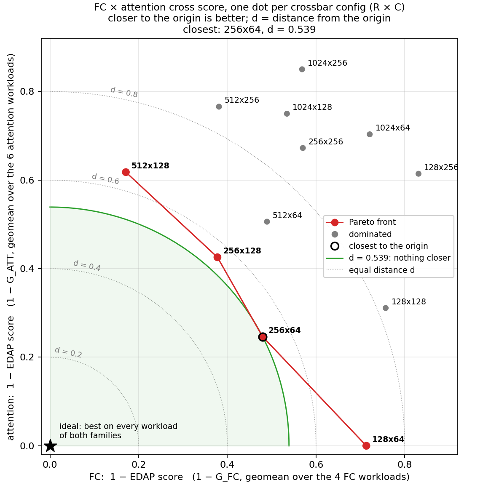
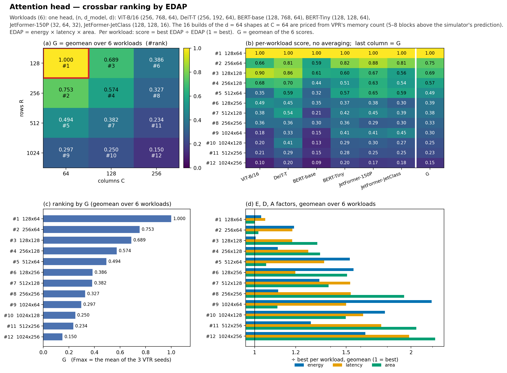
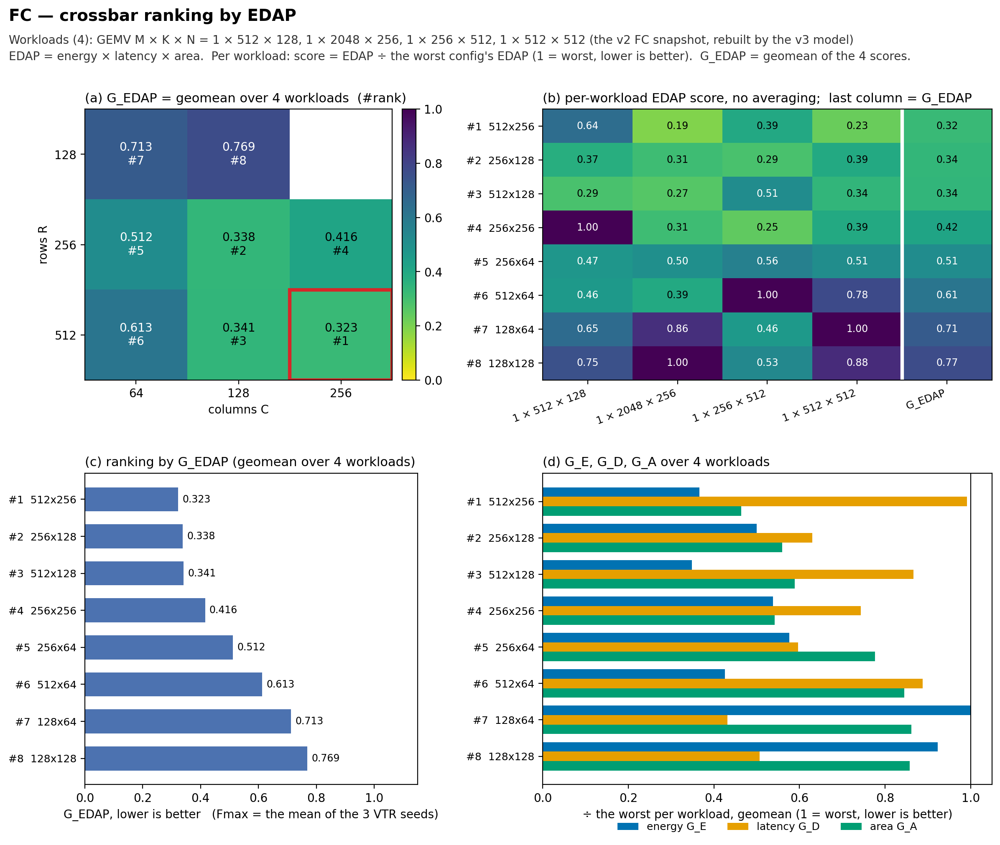
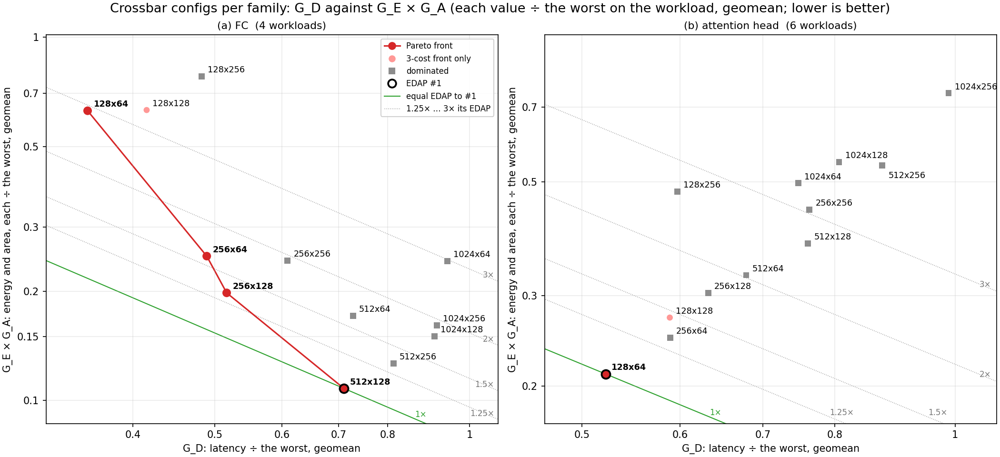

v3 DSE · VTR seeds 11, 13, 17 · 2026-10-16
Which crossbar size, rows R × columns C, gives the lowest EDAP (energy × latency × area)? Attention: 72 builds of one head (6 shapes × 12 configs), each placed and routed with three VTR seeds. FC: the 48 rows of the v2 snapshot. The notation of the latency vs area page: on each workload, a config's score is its EDAP ÷ the worst config's EDAP, so the worst scores 1 and lower is better; GEDAP is the geometric mean of its scores, and GE, GD, GA the same for energy, latency and area. Fmax is the mean of the three seeds.
Best on all 6 workloads. Workloads (n, dmodel, d): ViT-B/16 (256, 768, 64), DeiT-T (256, 192, 64), BERT-base (128, 768, 64), BERT-Tiny (128, 128, 64), JetFormer-150P (32, 64, 32), JetFormer-JetClass (128, 128, 16).
| # | R × C | GEDAP | GE | GD | GA |
|---|---|---|---|---|---|
| 1 | 128 × 64 | 0.150 | 0.47 | 0.52 | 0.45 |
| 2 | 256 × 64 | 0.199 | 0.54 | 0.59 | 0.46 |
| 3 | 128 × 128 | 0.217 | 0.46 | 0.59 | 0.59 |
| 4 | 256 × 128 | 0.261 | 0.51 | 0.63 | 0.60 |
| 5 | 512 × 64 | 0.303 | 0.70 | 0.68 | 0.47 |
| 6 | 128 × 256 | 0.388 | 0.71 | 0.60 | 0.68 |
| 7 | 512 × 128 | 0.392 | 0.61 | 0.76 | 0.62 |
| 8 | 256 × 256 | 0.457 | 0.51 | 0.76 | 0.87 |
| 9 | 1024 × 64 | 0.505 | 1.00 | 0.75 | 0.50 |
| 10 | 1024 × 128 | 0.599 | 0.81 | 0.81 | 0.67 |
| 11 | 512 × 256 | 0.639 | 0.59 | 0.87 | 0.92 |
| 12 | 1024 × 256 | 1.000 | 0.75 | 0.99 | 1.00 |
The same ranking as v2. Workloads M × K × N: 1 × 512 × 128, 1 × 2048 × 256, 1 × 256 × 512, 1 × 512 × 512.
| # | R × C | GEDAP | GE | GD | GA |
|---|---|---|---|---|---|
| 1 | 512 × 128 | 0.152 | 0.31 | 0.71 | 0.35 |
| 2 | 256 × 128 | 0.202 | 0.42 | 0.52 | 0.47 |
| 3 | 512 × 256 | 0.203 | 0.32 | 0.81 | 0.40 |
| 4 | 256 × 64 | 0.242 | 0.49 | 0.49 | 0.51 |
| 5 | 512 × 64 | 0.246 | 0.38 | 0.73 | 0.45 |
| 6 | 1024 × 128 | 0.270 | 0.37 | 0.91 | 0.40 |
| 7 | 1024 × 256 | 0.291 | 0.36 | 0.91 | 0.44 |
| 8 | 256 × 256 | 0.293 | 0.46 | 0.61 | 0.53 |
| 9 | 128 × 64 | 0.439 | 0.85 | 0.35 | 0.74 |
| 10 | 1024 × 64 | 0.451 | 0.50 | 0.94 | 0.48 |
| 11 | 128 × 128 | 0.518 | 0.78 | 0.42 | 0.80 |
| 12 | 128 × 256 | 0.745 | 0.87 | 0.48 | 0.90 |
GE, GD, GA: energy, latency and area, each ÷ the worst on the workload, geometric mean over the workloads (1.00 = the worst, lower is better).

| # | R × C | FC GEDAP | attention GEDAP | d | front |
|---|---|---|---|---|---|
| 1 | 256 × 64 | 0.242 | 0.199 | 0.313 | yes |
| 2 | 256 × 128 | 0.202 | 0.261 | 0.330 | yes |
| 3 | 512 × 64 | 0.246 | 0.303 | 0.391 | |
| 4 | 512 × 128 | 0.152 | 0.392 | 0.420 | yes |
| 5 | 128 × 64 | 0.439 | 0.150 | 0.464 | yes |
| 6 | 256 × 256 | 0.293 | 0.457 | 0.543 | |
| 7 | 128 × 128 | 0.518 | 0.217 | 0.562 | |
| 8 | 1024 × 128 | 0.270 | 0.599 | 0.657 | |
| 9 | 512 × 256 | 0.203 | 0.639 | 0.671 | |
| 10 | 1024 × 64 | 0.451 | 0.505 | 0.677 | |
| 11 | 128 × 256 | 0.745 | 0.388 | 0.840 | |
| 12 | 1024 × 256 | 0.291 | 1.000 | 1.042 |



The 16 attention builds of the d = 64 shapes at C = 64 are priced from VPR's own memory count, which is 5–8 blocks above the simulator's prediction (397–400 against 392). Every other count matches the prediction.
Fmax is the mean of the three seeds (93–148 MHz over the 72 builds). Latency = cycles ÷ Fmax; area counts CLBs, crossbar tiles and memory blocks from VPR.
Data: v3/dse/results/att_priced_72.csv, v3/dse/results/edap/ranking_fc.json, v3/dse/results/edap/ranking_attention.json, v3/dse/results/edap/ranking_cross.json.